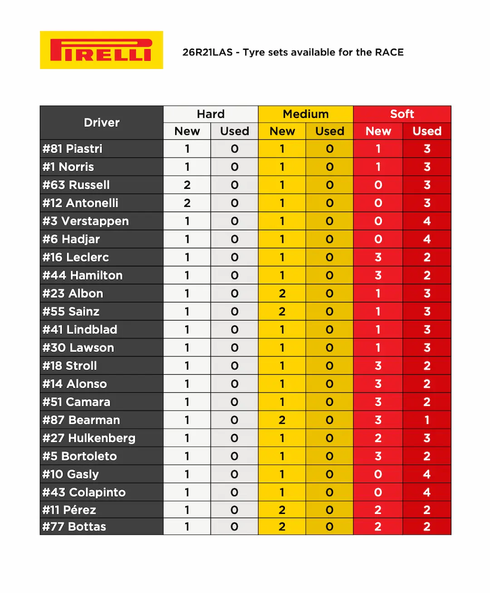
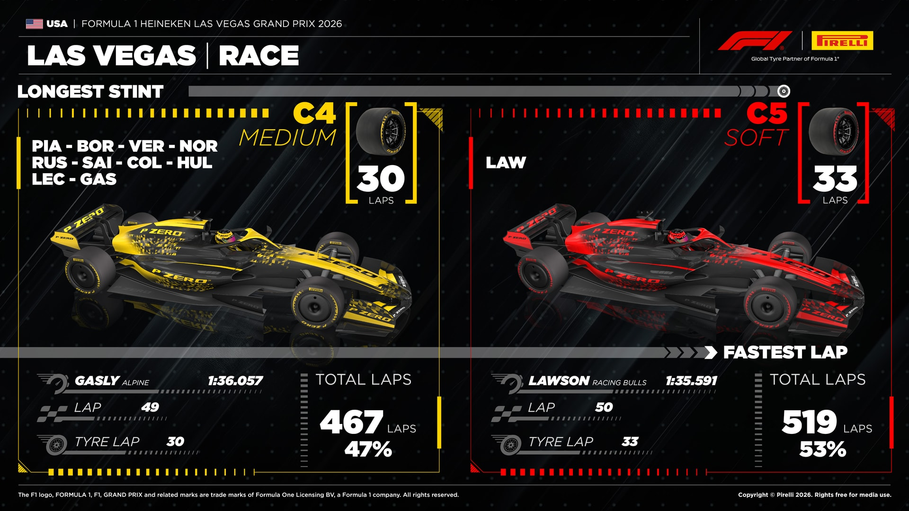
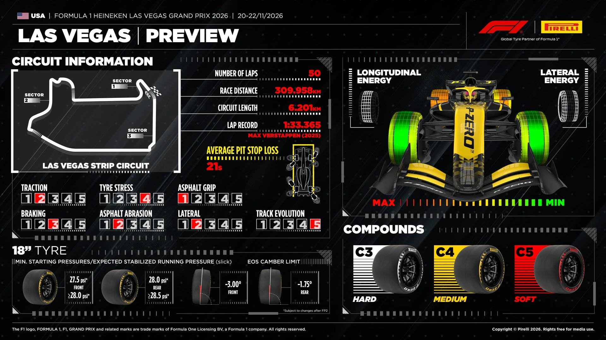
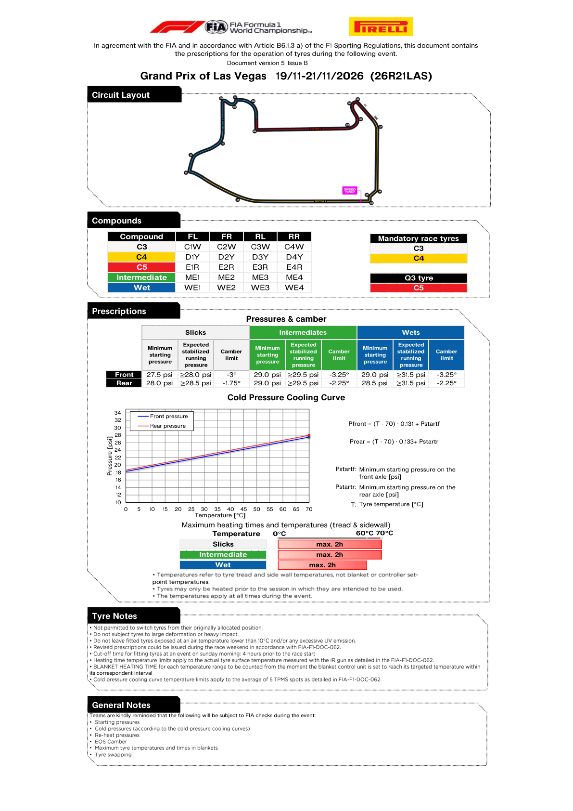
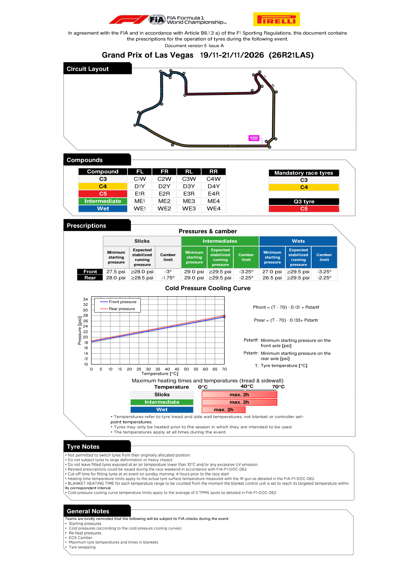

Tyres & Strategy
Compound allocation, degradation and the strategic shape of the race.
Race tyre availability
Pre-race tyre-set chart for Las Vegas Grand Prix on 2026-11-21 — not tyres remaining after the finish. This published source is independent of optional FastF1 analysis.

Tyre sets available for the race (reviewed transcription)
| Driver | Team | Hard (C3) | Medium (C4) | Soft (C5) |
|---|---|---|---|---|
| Franco Colapinto COL | Alpine | 1 new1 left in total | 1 new1 left in total | 0 new4 used4 left in total |
| Pierre Gasly GAS | Alpine | 1 new1 left in total | 1 new1 left in total | 0 new4 used4 left in total |
| Fernando Alonso ALO | Aston Martin | 1 new1 left in total | 1 new1 left in total | 3 new2 used5 left in total |
| Lance Stroll STR | Aston Martin | 1 new1 left in total | 1 new1 left in total | 3 new2 used5 left in total |
| Gabriel Bortoleto BOR | Audi | 1 new1 left in total | 1 new1 left in total | 3 new2 used5 left in total |
| Nico Hulkenberg HUL | Audi | 1 new1 left in total | 1 new1 left in total | 2 new3 used5 left in total |
| Sergio Perez PER | Cadillac | 1 new1 left in total | 2 new2 left in total | 2 new2 used4 left in total |
| Valtteri Bottas BOT | Cadillac | 1 new1 left in total | 2 new2 left in total | 2 new2 used4 left in total |
| Charles Leclerc LEC | Ferrari | 1 new1 left in total | 1 new1 left in total | 3 new2 used5 left in total |
| Lewis Hamilton HAM | Ferrari | 1 new1 left in total | 1 new1 left in total | 3 new2 used5 left in total |
| Oliver Bearman BEA | Haas F1 Team | 1 new1 left in total | 2 new2 left in total | 3 new1 used4 left in total |
| Rafael Camara CAM | Haas F1 Team | 1 new1 left in total | 1 new1 left in total | 3 new2 used5 left in total |
| Lando Norris NOR | McLaren | 1 new1 left in total | 1 new1 left in total | 1 new3 used4 left in total |
| Oscar Piastri PIA | McLaren | 1 new1 left in total | 1 new1 left in total | 1 new3 used4 left in total |
| George Russell RUS | Mercedes | 2 new2 left in total | 1 new1 left in total | 0 new3 used3 left in total |
| Kimi Antonelli ANT | Mercedes | 2 new2 left in total | 1 new1 left in total | 0 new3 used3 left in total |
| Arvid Lindblad LIN | Racing Bulls | 1 new1 left in total | 1 new1 left in total | 1 new3 used4 left in total |
| Liam Lawson LAW | Racing Bulls | 1 new1 left in total | 1 new1 left in total | 1 new3 used4 left in total |
| Isack Hadjar HAD | Red Bull Racing | 1 new1 left in total | 1 new1 left in total | 0 new4 used4 left in total |
| Max Verstappen VER | Red Bull Racing | 1 new1 left in total | 1 new1 left in total | 0 new4 used4 left in total |
| Alexander Albon ALB | Williams | 1 new1 left in total | 2 new2 left in total | 1 new3 used4 left in total |
| Carlos Sainz SAI | Williams | 1 new1 left in total | 2 new2 left in total | 1 new3 used4 left in total |
Source: Official 2026 Las Vegas Grand Prix "Tyres Available for Race" allocation data. Source publication.
Table visually transcribed from the displayed chart; reviewed 2026-11-24T01:40:06Z. A changed source image disables this transcription until reviewed again.
Source discovery checked 2026-11-28T06:01:46+00:00.
FIA official tyre documents
Official source; curated transcription may await review. Linked PDFs are the authority. Discovery does not extract or verify numeric values, and does not replace the curated material below.
Last successful FIA document discovery: 2026-11-28T06:00:52.271772+00:00. This is retrieval time, not issue time; newer revisions may exist.
Actual race strategy: Soft to Medium for the podium
Pirelli's post-race report confirms Verstappen, Norris and Piastri all started on Softs and switched to Mediums during the lap-19 Safety Car period. Antonelli, Lawson and Bearman started on Mediums. The complete chart records 23 pit stops; its bars show stint compounds, used/new status and stop laps, not stationary stop durations or pitlane elapsed times.
Pirelli reports a longest Medium stint of 30 tyre laps and Lawson's Soft stint of 33. Those are reported tyre ages, not an inferred remaining-set inventory. Track temperature was around 12°C. These are actual race findings, not the earlier one-stop forecast. Pirelli, 22 November · Official Pirelli race infographics.



What this circuit does to a tyre
The defining issue is cold: graining and warm-up dominate, and track temperature keeps falling through the night. Getting temperature into the fronts on an out-lap is genuinely difficult.
Why it matters here
Good, thanks to a very long full-throttle stretch into a slow corner. Slipstream effects are large because everyone runs skinny wings.
Where passing is hard, strategy and the undercut decide the race; where it is easy, teams can afford to run longer and recover track position on merit.
Pirelli's event preview

Pre-race strategy context, not a race-set inventory
Pirelli's 16 November preview favoured one stop on paper, with all three compounds potentially usable. Cold tyres after the pit exit weakened the traditional undercut. Its complete infographic gives an average pit-stop loss of 21 seconds; this is a preview estimate, not stationary stop time. The graphic's 20–22 November header does not override the official calendar's 19–21 November local sessions. The newer FIA V3 prescriptions below take precedence over the preview. No driver-by-driver remaining sets or actual race stints are inferred from either source. Pirelli preview.
Reviewed Pirelli prescriptions — V3 / Issue C
C3/C4/C5; mandatory race compounds C3 and C4, Q3 compound C5. Minimum starting pressures, front/rear: slick 27.5/28.0 psi; intermediate 29.0/29.0 psi; wet 29.0/28.5 psi. Expected stabilised minima: slick 28.0/28.5 psi, intermediate and wet 29.5/29.5 psi. Camber limits, front/rear: slick −3°/−1.75°, intermediate and wet −3.25°/−2.25°. Maximum tyre heating: slick/intermediate 70°C, wet 60°C, at most two hours. These are prescriptions, not the driver-by-driver remaining race-set inventory.
Official FIA document screenshots
Automatically rendered from the official PDFs. These figures do not update or verify the curated numeric transcriptions above. Unchanged pages already illustrated above are not repeated here.
2026_las_vegas_grand_prix_-_competition_notes_-_pirelli_preview_v2.pdf
PDF retrieved 2026-11-28T06:01:10+00:00; this is not its issue date.

2026_las_vegas_grand_prix_-_competition_notes_-_pirelli_preview.pdf
PDF retrieved 2026-11-28T06:01:10+00:00; this is not its issue date.
